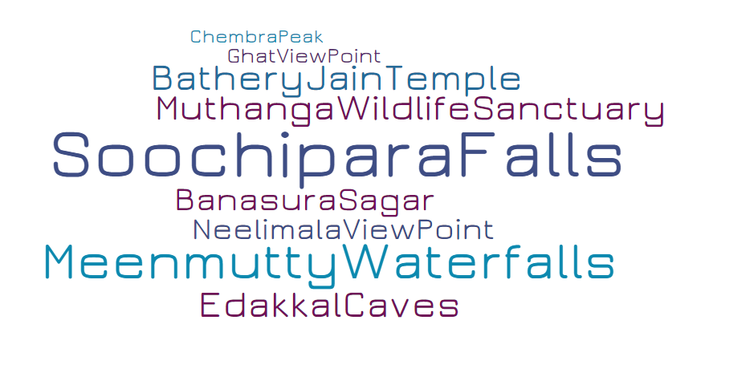

Wayanad is in the north-east of Kerala state with administrative headquarters at the municipality of Kalpetta. Wayanad District came into existence on 1st November, 1980 as the 12th District of Kerala consisting of Mananthavady, Sulthanbathery and Vythiri Taluks. The name Wayanad is derived from Vayal Nadu which means the land of paddy fields. It is a picturesque plateau situated at a height between 700 meters and 2100 meters above the mean sea level nested among the mountains of the Western Ghats on the Eastern portion of North Kerala and on the sides of Tamil Nadu and Karnataka States.
The towering Phantom Rock and its surroundings are popular among nature lovers and photographers.

Lying towards the north of the district of Wayanad, this region harbours a rich diversity of flora.

Wayanad is home to Indias largest earthen dam, the Banasura Sagar. The dam, which was constructed in 1979,

Located at about 1200 ft above the sea level, the Edakkal Caves are among the oldest human settlements ever discovered.